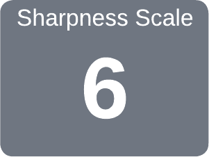
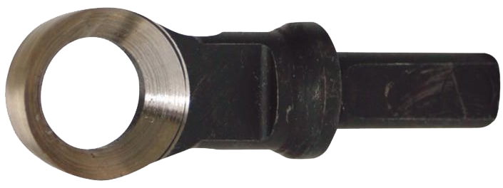
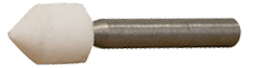

The Termite Bit for the Termite End Grain Tool is sharpened by:

click on the gray block to see more
- mounting the Bit in the Grinding Block,
- mounting the Grinding Point in a:
- Pillar / Drill Press,
- Router, or
- Die Grinder
- using the Grinding Block to hold the Bit against the Grinding Point whilst the Grinding Point is being spun.
|
Woodworking - patience = firewood. Unknown |

Oneway Termite bit

Oneway Termite grinding point

Oneway Termite grinding block